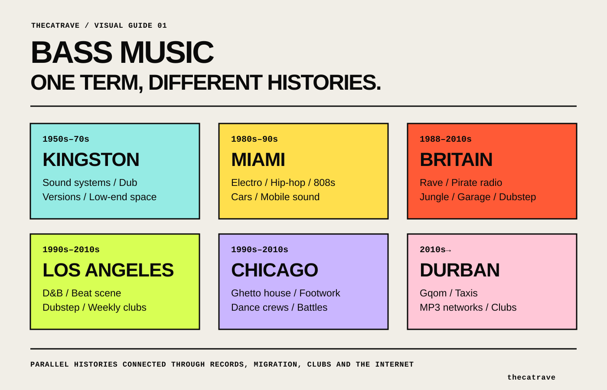

Bass music guide
What is bass music?
A scene-led history across Jamaica, Miami, Britain, Los Angeles, Chicago, Durban and today’s hybrid club culture.
Bass music is not one sound.
Search for bass music and the results pull in several directions at once. One listener means dubstep. Another is talking about jungle, UK garage or grime. In Miami, the phrase has a history tied to electro, hip-hop, cars and the Roland TR-808. On the American festival circuit, it can cover trap, riddim, glitch-hop and other heavy electronic styles. The disagreement is not a problem to solve before the music can be enjoyed. It is part of the history.
Bass music became useful precisely because DJs, labels, promoters and listeners needed a loose name for records that kept crossing established borders. That looseness also makes the term easy to misuse. The way through is not another enormous list of subgenres. It is to follow the scenes, rooms and systems that gave the phrase different meanings.
A global history therefore cannot begin and end with UK bass. Jamaican sound-system and dub practice, Miami electro and hip-hop, British rave lineages, Los Angeles beat culture, Chicago footwork and Durban gqom do not form one neat family tree. They are distinct histories that met through migration, records, clubs, DJs, radio, touring and digital platforms. The umbrella is useful only if those local names remain visible underneath it.

Jamaica / Miami / Britain
Where did bass music come from?
Jamaica: sound systems, version culture and dub
The practices now grouped under bass music are older than the umbrella label. A useful history begins with Jamaican sound-system culture, but it should not pretend that every later genre is a simple branch of dub. Sound systems were mobile institutions. A crew selected records, controlled amplification, voiced the dance through an MC and competed through exclusives. The system changed how music was recorded because a track had to work in a particular social and physical setting.
Dub made the studio part of that performance. Engineers and producers removed vocals, reorganised rhythm sections and used echo, reverb and dropouts to turn familiar recordings into new versions. Bass had room to carry structure rather than sitting underneath it. A record could be known through its transformation, its exclusive cut and the way a particular system made it feel.

What to listen for: The bass does not simply support the arrangement. It holds the empty space together while percussion, melodica and echo appear around it.
The movement of Jamaican music and sound-system practice into Britain changed clubs, community spaces and popular music. The Goldsmiths Bass Culture project describes this history as part of the making of post-war British urban culture, not merely a set of production techniques borrowed by later electronic artists. Reggae dances, blues parties, selectors, MCs, dubplates and independent distribution offered both a musical language and a way of organising outside mainstream institutions.
That influence did not produce one straight line. It travelled through lovers rock, punk and dub, trip-hop, broken beat, jungle, grime and other forms at different times and in different cities. Linton Kwesi Johnson's 1980 album Bass Culture belongs to this broader Black British history. It does not prove that journalists were already using bass music in the later genre sense. It shows that bass already carried cultural and political meaning long before the club press needed a new umbrella.
Miami: electro, hip-hop and car systems
By the early 1980s, American low-end culture was following its own routes. Electro and hip-hop producers built records around drum machines, block parties, skating rinks and car systems. In Miami, artists including Pretty Tony, Amos Larkins, Maggotron, 2 Live Crew and Dynamix II used the TR-808's long-decay bass drum as both kick and low-end foundation for a local style that became known as Miami bass. The records belonged to a specific South Florida network of DJs, teen parties, radio, mobile sound systems, cars and rap. Miami bass was not a later American reaction to UK dubstep. It was already a named regional culture in the 1980s, with its own dance routines, record labels and ways of hearing low end in public.

What to listen for: The 808 is both kick and bass source. The speed, chants and dance instruction place the record inside Miami hip-hop rather than an early version of UK club music.
Britain: bleep, breakbeat hardcore and jungle
In Britain, another low-end route was forming around warehouse parties and raves. Late-1980s bleep records from Yorkshire used sparse machine rhythm and sub-bass in ways that were indebted to reggae systems without copying reggae form. Breakbeat hardcore then drew together house and techno records, hip-hop breaks, sampled vocals and increasingly forceful low end. Jungle accelerated and reorganised that mixture. Pirate radio, MCs, dubplates and cutting houses helped the music change faster than a conventional release schedule could document.
None of these records needed the later umbrella name to make sense in its own scene. That distinction matters. Bass music did not arrive fully formed in one city or one year. Its eventual vocabulary was assembled from older, sometimes parallel cultures that had their own names and priorities.
How “bass music” became an umbrella term and travelled.
By the late 2000s, dubstep had expanded far beyond the early South London network that formed around Big Apple Records, FWD>> and DMZ. At the same time, producers raised on jungle, drum and bass, UK garage and grime were making records that moved between house, techno, funky, juke, R&B and dubstep without settling into one of them. The old genre labels still described parts of the music, but none covered the whole exchange.
The language around Night Slugs captures the shift. The party began in 2008 with a remit described as “heavy bass music and global gutter house”. By January 2010, The Guardian was calling it a centre for post-garage bass music and linking London producer Bok Bok with New York's Kingdom. The point was not that both cities had suddenly discovered the same genre. Internet exchange, touring and shared records were letting local club languages collide faster.

By 2010–11, retailers and electronic-music publications were using UK bass music for releases that pulled from grime, funky, house and dubstep. In 2011, The Guardian could place post-dubstep, future garage and UK bass music side by side while admitting that nobody knew exactly what to call the field. Night Slugs, Hyperdub, Hessle Audio, Hotflush and Swamp81 were central not because they agreed on one style, but because each created a structure in which unstable styles could circulate.
There is no good evidence for one person inventing the phrase. It became conspicuous through accumulation: record-shop descriptions, reviews, club listings, festival categories and DJs who needed to describe sets crossing several tempos. Bass music worked as a practical folder. UK bass also developed a narrower use for post-dubstep club records combining elements of garage, grime, funky, house, techno and juke.
What to listen for: The record has garage swing and sub-bass weight, but its arrangement and emotional pull did not fit the harder dubstep categories dominating discussion in 2009.
The umbrella became more useful as the borders became less stable. It also became less precise. A promoter could use bass music to place several compatible DJs on one flyer. A retailer could use it to organise records that did not fit established shelves. A listener could use it to search across scenes. None of those uses required every artist involved to claim the identity.
Why “bass music” means different things in different scenes.
UK bass music and the British bass continuum
In its broadest British use, bass music refers to a long conversation between Jamaican sound-system practice and UK club forms including jungle, drum and bass, garage, grime, dubstep, bassline and funky. These genres are not interchangeable. They have different tempos, rhythmic structures, regional centres, audiences and arguments. What connects them is the infrastructure through which ideas travelled: pirate radio, dubplates, specialist shops, small labels, MC culture and DJs willing to change direction inside one set.
The dubplate is a good example. A specially cut exclusive could move from reggae sound systems into jungle, drum and bass, garage, grime and dubstep while serving different musical purposes in each. Cutting houses including Music House, JTS and Transition became meeting points as well as technical services. DJ Mag's history of UK dubplate culture describes producers hearing one another's work, competing and exchanging ideas in the same rooms.
The narrower use of UK bass emerged mainly in the late-2000s and early-2010s, when dubstep's edges met house, techno, UK funky, juke, R&B and older garage forms. Labels such as Hessle Audio or Night Slugs could be called UK bass without every release sounding alike. In this sense, the term describes a field of hybrid club music, not the complete history of British music with heavy sub-bass.
Placed together, these records make the transition audible. One is tied to dubstep's sound-system ritual and DMZ. The other brought a version of Chicago footwork rhythm into Swamp81's UK circulation. The connection is made by DJs, labels and rooms rather than a tidy parent-and-child genre diagram.
American bass music: Miami, Los Angeles and the festival circuit
The American meaning is not one thing either. Miami bass was already a named hip-hop and electro form in the 1980s. Its low end was built for local parties and car systems, and its influence ran through Southern rap, freestyle, electro and Florida breaks. That history is often erased when American bass music is made to begin with dubstep two decades later.
Los Angeles developed another network. In the late 1990s and early 2000s, drum and bass nights such as Respect existed alongside hip-hop and experimental beat culture. Dub Club connected reggae and dancehall to a new generation. Smog brought early UK dubstep artists into downtown venues. Low End Theory, founded in 2006, gave producers including Flying Lotus and Nosaj Thing a weekly community in which hip-hop, instrumental beats and electronic experimentation could share a system.
When UK dubstep reached larger North American audiences around 2009 and 2010, it entered this existing terrain. Los Angeles and the West Coast did not simply preserve the Croydon sound. Producers and festivals combined it with hip-hop, glitch, psychedelia, metal dynamics and large-stage expectations. Mixmag's account of the West Coast scene is strongest when participants describe bass as a physical and communal experience, not when it tries to make the scene descend from one source.
This is not an origin record. It belongs because it changed scale. Its mid-range design, sharp contrasts and crossover success helped establish what many North American listeners expected from dubstep and, by extension, bass music.
Festival usage widened the category again. Dubstep, riddim, electronic trap, glitch-hop, future bass, melodic bass and bass house could appear under the same commercial heading even when their histories differed. In this context, bass music often describes an audience and event circuit as much as musical construction.
Chicago footwork, Durban gqom and cross-border bass networks
International circulation creates a temptation to put every rhythmically adventurous club genre into a global bass folder. That can help listeners find music, but it can also replace a local history with an export category.

Chicago footwork came from house, ghetto house, dance crews and competitive battles. RP Boo's productions were built for dancers long before UK labels helped the sound reach a wider electronic audience. Planet Mu's Bangs & Works compilation and records such as Addison Groove's Footcrab created a productive UK exchange, but they did not turn footwork into a British bass subgenre.
Gqom emerged in Durban from local house traditions, township parties, taxi culture and informal digital distribution. International labels and UK club collaborations later placed it beside bass-oriented music. Resident Advisor's conversation with DJ Lag and Nan Kolè makes the local infrastructure clear: MP3 sites, Facebook groups, WhatsApp and taxi playback were central to the sound's growth.
Together, footwork and gqom show how bass-oriented club networks exchange rhythm without turning distinct local scenes into supporting characters in one universal story.

Types of bass music: a scene-by-scene listening map.
There is no definitive list of bass music genres. The category expands or contracts depending on who is using it. A better map groups scenes by historical exchange and listening context, while keeping their individual names visible.
| Scene | Historical setting | Starting points |
|---|---|---|
| Dub and sound systems | Kingston, Britain | King Tubby, Scientist, Jah Shaka, Adrian Sherwood |
| Jungle, D&B, garage, grime, dubstep | British pirate radio and club networks | Goldie, Wiley, Digital Mystikz, Burial, Cooly G |
| Miami bass and American low-end culture | South Florida parties, cars and rap | Pretty Tony, Maggotron, 2 Live Crew, Dynamix II |
| Footwork and gqom | Chicago dance battles; Durban parties and taxis | RP Boo, DJ Rashad, DJ Lag, Rudeboyz |
| Bass house, future bass and hybrids | Online and festival networks | Use the local genre name whenever it is known |
Dub and the sound-system lineage
This route begins with Jamaican sound systems, version culture and dub, then continues through British reggae, jungle, grime and dubstep. The shared principle is not one rhythm. It is the treatment of recorded music as material that can be versioned, voiced, cut exclusively and tested on a system.
Start with: King Tubby, Scientist, Jah Shaka, Adrian Sherwood, Digital Mystikz and Kode9.
Jungle, drum and bass, UK garage, grime and dubstep
These are separate British scenes connected by pirate radio, dubplates, MCs, clubs and producers moving between tempos. Jungle reorganised breakbeat hardcore around chopped drums and sub-bass. UK garage changed the swing and social atmosphere. Grime stripped rhythm into space for MCs. Dubstep pulled dark garage and sound-system ideas towards 140 BPM. Bassline and UK funky developed through different regional and rhythmic pressures.
Start with: Lennie De Ice, Goldie, Shy FX, DJ Zinc, Wiley, Youngstar, Digital Mystikz, Skream, Burial, Cooly G and DJ Q.
Miami bass, trap and American low-end culture
Miami bass brought together electro programming, hip-hop vocals, local dance culture and the TR-808. Later Southern rap and electronic trap used some related low-end language without becoming the same genre. Festival bass then placed trap beside dubstep and other electronic styles for a new audience.
Start with: Pretty Tony, Maggotron, 2 Live Crew, Anquette, Dynamix II, DJ Laz and TNGHT.
Footwork, gqom and cross-border club exchange
Footwork and gqom should not be presented as generic bass subgenres. Both demonstrate how local music can enter international club circulation without surrendering its own origin. Their inclusion also reveals how UK labels and European festivals sometimes use bass as a programming category broader than the artists' own terminology.
Start with: RP Boo, DJ Rashad, DJ Spinn, Traxman, DJ Lag, Rudeboyz and Menchess.
Bass house, future bass and contemporary hybrids
In the 2010s, bass music also became an industry category for newer electronic styles. Bass house kept four-to-the-floor structure while moving bass timbre and drop design to the foreground. Future bass combined trap-derived rhythm, bright chord movement and heavily processed synths. Riddim narrowed dubstep's drop language into repetitive, syncopated patterns, while glitch-hop connected hip-hop tempos with detailed digital sound design. Melodic bass foregrounded vocals and chord drama; midtempo slowed festival pressure into a rigid pulse; experimental and freeform bass treated low end as material for less predictable sound design. These labels developed within overlapping North American online and festival networks.
These categories matter because real audiences use them. They should not be retroactively made the destination of every earlier scene. Their history is closer to the global expansion of EDM platforms, streaming channels and festival programming than to one continuous genre evolution.
How bass music lives: sound systems, pirate radio, clubs and labels.
A genre list cannot explain why the same record makes sense in one scene and feels misplaced in another. Infrastructure supplies the missing part.
A sound system turns low end into public experience. The room, speaker design, volume limits and crowd all affect what producers leave in a mix. Outlook Festival built its identity around custom systems and a programme connecting dub, jungle, drum and bass, garage, grime and dubstep. Researcher Ivan Mouraviev describes it as a convergence of technologies, practices and values, not only a collection of bass-heavy acts. His fieldwork also shows the conflict: strict sound limits can weaken the very experience the event promises.
Dubplates made circulation competitive. A DJ could test unfinished music, reward a crowd with a version unavailable elsewhere and force other producers to respond. Pirate radio made local scenes audible beyond a single club while retaining the voices of DJs and MCs. Record shops connected listeners, producers and labels. Nights such as FWD>>, DMZ, Low End Theory, Niche and Night Slugs were not neutral containers. Their booking, room and audience helped define the music associated with them.
Digital platforms changed the speed and geography of that process. YouTube channels helped take dubstep and drum and bass to listeners without local access to the clubs. SoundCloud made mixes, edits and unfinished tracks travel internationally. WhatsApp and MP3 networks performed a different role in Durban's gqom scene. Streaming services made genre categories more visible while often flattening regional context into playlist metadata.
The tools changed, but the underlying question remained: who gets to play a record, where can it be heard properly, and which community gives it meaning?
Bass music artists and records that changed the culture.
This is not a hall of fame. Each record is here because it changes the definition rather than merely representing a popular subgenre.
| Record | Why it matters |
|---|---|
| Augustus Pablo and King Tubby, King Tubby Meets Rockers Uptown | Dub as arrangement, version and low-end space. |
| 2 Live Crew, Throw the D | An early Miami bass benchmark built around sustained 808 pressure and dance instruction. |
| LFO, LFO | Bleep, sub-bass and a Northern British route into rave. |
| Lennie De Ice, We Are I.E. | A threshold record for jungle forming from hardcore. |
| Wiley, Eskimo | Grime minimalism and pirate-radio space. |
| Digital Mystikz, Anti War Dub | Dubstep as sound-system ritual. |
| Joy Orbison, Hyph Mngo | Garage, dubstep and house becoming difficult to separate. |
| Addison Groove, Footcrab | UK and Chicago exchange through Swamp81. |
| Skrillex, Scary Monsters and Nice Sprites | A North American change in scale and timbre. |
| TNGHT, Higher Ground | Southern rap rhythm meeting festival electronics. |
| DJ Rashad, Let U No | Footwork carrying emotional weight beyond novelty rhythm. |
| DJ Lag, Ice Drop | Gqom travelling internationally without losing Durban identity. |
Bass music today: hybrid sets and blurred genre borders.
Bass music in the mid-2020s is not one revival. Drum and bass has renewed visibility in North America. UK garage and bassline are travelling internationally again. Jungle continues through both original participants and younger producers. Dubstep has deep, experimental, commercial and festival-facing scenes that share a name but not one audience. Club DJs move between these forms with breaks, techno, grime, footwork and regional rhythms.
Recent coverage of Bakey is revealing. Mixmag described his music as a combination of bassline, UK garage, jungle and breaks that seemed to embody UK bass, then noted that the identity had itself become restrictive. That tension is the contemporary meaning of the umbrella. It gives an audience a way into the work, but the most interesting artists soon test its borders.
The DJ set remains where the term feels most practical. A selector can connect records that would sit in different store categories by matching pressure, rhythmic space or emotional direction. The transitions show relationships that a static genre tree cannot.
Where to start with bass music: tracks, playlists and mixes.
Start with exact records, then use mixes to hear how DJs connect them.
systems and foundations
Begin with King Tubby and Augustus Pablo, Linton Kwesi Johnson and early Miami bass. The purpose is not to locate one starting record. It is to hear how different communities made low end central before the later umbrella existed.
the British bass continuum
Move from bleep and jungle into UK garage, grime, dubstep and the late-2000s hybrid period. A good route should include LFO, Lennie De Ice, DJ Zinc, Wiley, Digital Mystikz, Burial, Joy Orbison and Addison Groove without implying that every transition was smooth or universally accepted.
American and cross-border meanings
Connect Miami bass, Los Angeles beat music, American dubstep, electronic trap, footwork and selected international exchanges. Preserve the local genre names and use the mix to demonstrate contact rather than ownership.
A playlist offers breadth. A mix adds sequencing, tension and the choices of a particular DJ. Both are useful because bass music is as much a way of connecting records as it is a way of classifying them.
Is “bass music” still a useful term?
Yes, if its limits stay visible.
Bass music is useful at the point of discovery. It lets a listener move from dubstep to jungle, from Miami bass to electro, or from garage to contemporary broken club music without knowing every scene name in advance. It is useful to DJs whose sets cross established categories. It is useful to promoters and labels working between them.
The term becomes less useful when convenience replaces history. Calling footwork, gqom, jungle and trap branches of one universal genre can hide the cities, dance practices and communities that made them distinct. Calling every UK club record UK bass can erase regional differences between London, Bristol, Sheffield, Leeds and other centres. Calling American bass music an export of dubstep forgets Miami, electro, hip-hop and drum and bass networks that were already there.
The best definition is therefore operational rather than absolute. Bass music names a changing field of low-end-led club and hip-hop forms that meet through systems, DJs, labels and audiences. It helps us enter the field. Listening closely tells us when to stop using the umbrella and call a scene by its own name.
Bass music FAQ.
Is bass music a genre?
Bass music is usually more useful as an umbrella term than as one fixed genre. It can include several forms of electronic dance music and hip-hop connected by bass-led production, sound-system playback and overlapping club networks. Some local scenes and platforms use the phrase more narrowly, so context matters.
What genres are considered bass music?
Commonly included genres can include dubstep, jungle, drum and bass, UK garage, grime, bassline, UK funky, Miami bass, electronic trap, bass house, future bass and several hybrid club styles. The list is not universal. Footwork, gqom and other local forms may appear in bass-oriented programming without becoming bass-music subgenres.
What is UK bass music?
In a broad sense, UK bass music can refer to British club forms shaped by sound-system culture, including jungle, drum and bass, garage, grime, dubstep, bassline and funky. In a narrower sense, UK bass describes late-2000s and early-2010s hybrid music that moved between dubstep, garage, house, techno, grime, funky and juke.
Is dubstep bass music?
Yes. Dubstep is one of the central genres associated with bass music, especially in both British and North American usage. Dubstep is not a synonym for the entire category, and its early South London sound differs substantially from several later American festival forms.
Is drum and bass considered bass music?
It often is, particularly in UK sound-system and festival contexts. Drum and bass remains its own genre and scene, with a history that does not depend on the later umbrella label. Some North American listeners use bass music mainly for dubstep, trap and related festival sounds, so drum and bass may be treated separately there.
Sources.
- Goldsmiths: Bass Culture Research
- MoPOP: King Tubby’s MCI mixing console
- Red Bull Music Academy: Miami bass mobile DJs oral history
- DJ Mag: UK dubplate culture
- LA Weekly: A history of bass music in Los Angeles
- NPR: Chicago footwork
- Resident Advisor Exchange: DJ Lag and Nan Kolè
- Afropop Worldwide: Distruction Boyz and gqom
- Mixmag: The US West Coast bass scene
Continue reading